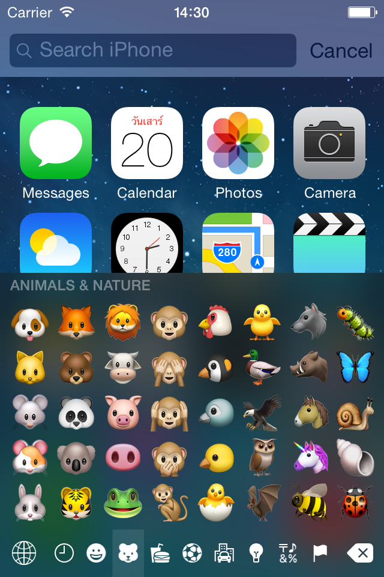
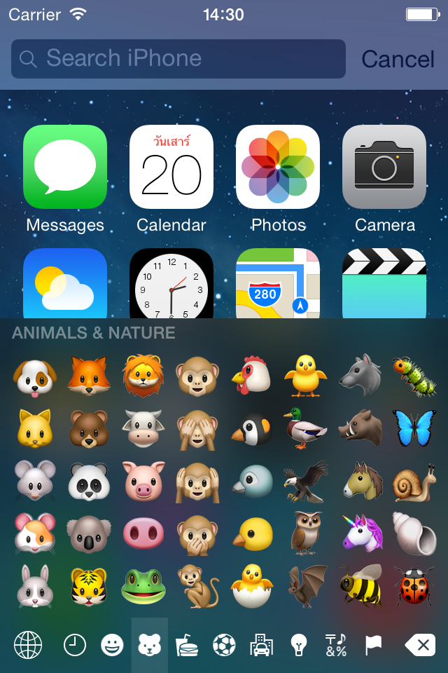

EmojiPort
A set of open-source tweaks that enable latest emojis on your device, developed by PoomSmart.
EmojiPort: iOS 8.1 / 8.4 / 9.0 / 9.3 / 10.1 / 10.3
Compatibility and Dependencies
| Tweak | iOS Versions | ||||
|---|---|---|---|---|---|
| 5.1 | 6.0 - 8.2 | 8.3 - 8.4 | 9.0 - 9.3 | 10.0 - 11.4 | |
| EmojiPort (iOS 5.1) | Yes | - | - | - | - |
| EmojiPort (iOS 6.0-8.2) | - | Yes | - | - | - |
| EmojiPort (iOS 8.3-8.4) | - | - | Yes | - | - |
| EmojiPort (iOS 9.0-9.3) | - | - | - | Yes | - |
| EmojiPort (iOS 10.0-11.4) | - | - | - | - | Yes |
| EmojiAttributes | Required | ||||
| EmojiLibrary | Required | ||||
| EmojiLocalization | Required | Required | Required | Required, < 9.1 | - |
| EmojiResources | - | Required, 7.0+ | Required | Required, < 9.1 | - |
| EmojiFontManager | Unknown | Yes | Yes | Yes | Yes |
| EmojiDarkStyle | - | iOS 7.0+ | Yes | Yes | < 10.2 |
Which does what?
EmojiPort (all variants) adds latest emojis on your emoji keyboard. It may need the following other tweaks depending on the iOS version you are on to make everything work as intended.
EmojiAttributes
This tweak helps display emoji characters properly. Otherwise, we may see "?", "U", square or just blank space instead of actual emojis.
EmojiLocalization
This tweak adds missing localized strings on the emoji keyboard.
EmojiResources
This tweak adds missing category icons on the emoji keyboard.
EmojiFontManager
This tweak allows users to install the correct emoji font without filesystem modifications..
EmojiLibrary
It is rather a library but required for all EmojiPort tweaks to handle any kind of emoji correctly.
EmojiDarkStyle
This tweak is optional. It enables dark variants of emoji category icons available on iOS 10.2+.
Read first about EmojiPort
Emojis have been integrated into iOS as a keyboard. All emojis you see on the keyboard are defined as lists within the system, varying across iOS versions. Newer iOS versions usually include more emojis so the users at the lower versions won't be able to use nor see unless they update their iOS.
All emoji images are packed as a font, named AppleColorEmoji (and .AppleColorEmojiUI in iOS 10+). In other words, an emoji font is crucial in order to display emojis correctly. For sure, the font gets updated to include new emojis.
EmojiPort will override the original emoji list with the up-to-date one. It means that your emoji keyboard will have more and latest emojis. For this, EmojiPort requires an up-to-date font that contains all emoji images needed. Without the new font installed, users are going to see "blank" emojis - in other words, new emojis won't show up.
How to install EmojiPort?
First of all, add this Cydia repository: https://poomsmart.github.io/repo
Note that "LATEST" will mean whatever latest version of iOS that have new emojis. For example, 12.1
1. Get the latest emoji font
Option #1: BytaFont (iOS 6 - 9)
Installation
- Make sure you have enough space on the system partition (over 50 MB is recommended)
- If BytaFont app cannot be run as root (for example: on iOS 9.3.5 with stashing tweak), you cannot proceed and have to choose another method
- Install BytaFont app (BytaFont 3 for iOS 9, BytaFont 2 for iOS 7 - 8, BytaFont for iOS 5-6)
- Add this Cydia repository: https://vxbakerxv.github.io/repo
- Install Emoji iOS "LATEST" font
- Open BytaFont app, go to Swap Mode > Emoji and tap Emoji"LATEST" to enable the font, and respring.
Uninstallation
- Open BytaFont app, go to Swap mode > Emoji then tap on Restore BytaFont Backup to restore the default emoji font, and respring.
- Open Cydia to uninstall Emoji iOS "LATEST" (font)
- Respring your device.
Option #2: EmojiFontManager (iOS 6+)
Note: It supports Anemone emoji fonts.
Installation
- Disable any emoji font applied by Anemone, as this tweak simply overrides it.
- Add this Cydia repository: https://vxbakerxv.github.io/repo
- Install EmojiFontManager and Emoji iOS "LATEST" (EFM) (font)
- Go to Settings > EmojiFontManger, select Emoji"LATEST" to enable the font and tap Respring button to apply changes.
Uninstallation
- Open Cydia to uninstall Emoji iOS "LATEST" (EFM) and EmojiFontManager
- Respring your device.
Option #3: Manual
Download a compatible font (choose one)
Back up the original fonts
- Backup the default
AppleColorEmoji@2x.ttc (or
AppleColorEmoji@2x.ttf) and
AppleColorEmoji@2x.ccf (if there is one) in
/System/Library/Fonts/Coreor/System/Library/Fonts/Cacheof your device (Rename by adding .bak or simply move them to somewhere else) - If you device is non-retina, all font names won't include @2x, instead will be _1x (in iOS 8.2) or just none otherwise.
Copy the font to the correct location
- For iOS 5.1 - 8.1 users, place downloaded files at
/System/Library/Fonts/Cacheon your device. - For iOS 8.2 - 10.0+ users, place downloaded files at
/System/Library/Fonts/Coreon your device.
Important Notes
- If you choose iOS "LATEST" font for iOS <=9.3 and you are using a non-Retina device, rename the font name from AppleColorEmoji@2x.ttf to AppleColorEmoji.ttf (iOS != 8.2), or from AppleColorEmoji@2x.ttf to AppleColorEmoji_1x.ttf otherwise.
- If you choose iOS "LATEST" font for iOS <=9.3 and you are at iOS 8.3+, make sure you don't have the original CCF file in the same directory. You can either move this CCF to somewhere else or rename it to something else.
2. Install EmojiPort of your iOS version
- In Cydia, search for EmojiPort
- Select and install the one with the corresponding iOS version in the parentheses.
- Respring your device.
Troubleshooting
General problem
Many people don't use the correct emoji font after they install the tweaks. The original font won't contain any new emojis. This is why users experience bugs at displaying emoji characters.
Issues with fonts
BytaFont (well, any versions) is known to create problems more than profits because it has to swap a new emoji font with the default one. If the swap fails due to there is no enough disk space for the font or anything else, the emoji keyboard is messed up.
To fix this, you have to see what happened inside the directory
/System/Library/Fonts/Core (iOS 8.2+) or
/System/Library/Fonts/Cache otherwise. The original font should still be there, but maybe with a wrong file extension.
- For iOS 5.1 - 8.1, the exactly correct name of the emoji font is AppleColorEmoji@2x.ttf (retina devices) or AppleColorEmoji.ttf otherwise
- For iOS 8.2, the exactly correct name of the emoji font is AppleColorEmoji_2x.ttf (retina devices) or AppleColorEmoji_1x.ttf otherwise
- For iOS 8.3 - 9.3, similar to 5.1 - 8.1 ones but you will also have AppleColorEmoji@2x.ccf (or AppleColorEmoji.ccf), which is larger than the ttf
- For iOS 10.0+, similar to 8.3 - 9.3 but AppleColorEmoji@2x.ttc instead of AppleColorEmoji@2x.ttf
If you see something different, you are likely to have issues with the font. To restore default fonts, there are multiple ways:
- [BytaFont] Get BytaFont Backup fonts that should be in Cydia for you to recover lost fonts.
-
[BytaFont]
/User/Library/Preferences/BytaFontBackupshould keep all the default fonts, you can get the old emoji font from there. - Some system-default emoji fonts are provided here
- Download firmware or OTA update corresponding to your iOS version, extract files (decrypt if needed) and copy the original ones to the font directory.
By installing the correct font, this should fix 90% of problems installing EmojiPort that new users usually encounter.
Especially for iOS 8.2, Apple named emoji font to be AppleColorEmoji (underscore)(2 or 1)x.ttf. BytaFont might not be able to handle this special case and you might need to rename the file manually, by changing from "@ " to "_ ".
Font on non-retina devices
Some font management tool like Anemone may not handle the new emoji font correctly. Most of the emoji font packages have only AppleColorEmoji@2x.ttf. In other words, only the font is recognized by retina devices. The simplest recommendation is, you install the font manually so that you can make sure the font name contains no @2x nor _2x.
Emoji duplication bug
This problem can occur on iOS 8.3 and above with (the old) Emoji10 installation. The latest versions already prevent that from happening, but users could still see. This bug persists even after uninstallation. To fix it, you can either:
- Delete
/User/Library/Preferences/com.apple.EmojiPreferences.plistand respring your device - Tap Reset emoji preferences in the settings page of EmojiFontManager that you are supposed to install just for resetting process
Known issues
EmojiPort (iOS 5.1)
- Unforseen issue about keyboard
- Emoji HUD may accidentially show as swiping across emoji pages
EmojiPort (iOS 6.0-8.2)
- Keyboard appearance issue in rare cases
- Emoji HUD may accidentially show as swiping across emoji pages
EmojiPort (iOS 8.3-8.4)
- -
EmojiPort (iOS 9.0-9.3)
- -
EmojiPort (iOS 10.0-11.4)
- Hacky workaround for CoreEmoji.framework complication; should have been simplified
EmojiPort (iOS 12.0)
- Inherited from EmojiPort (iOS 10.0-11.4)
EmojiAttributes
- Display issue of the three flag emojis (iOS < 11.2)
- Emoji split and wrong glyph size issues on websites (iOS < 10)
- Emoji won't combine (iOS 5.1, WebCore version too old)
- Outdated CoreFoundation hack
 
